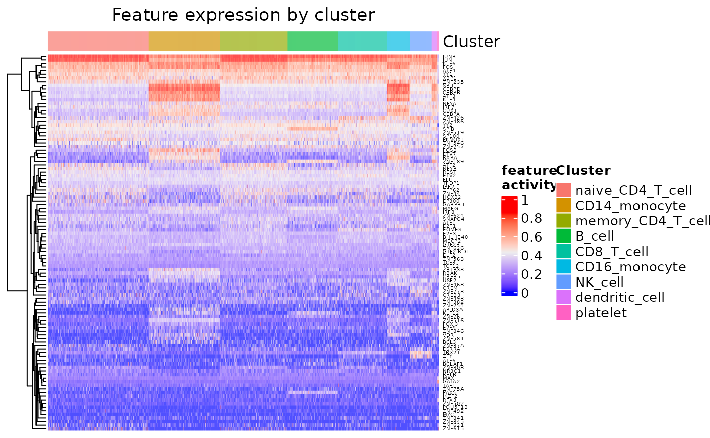
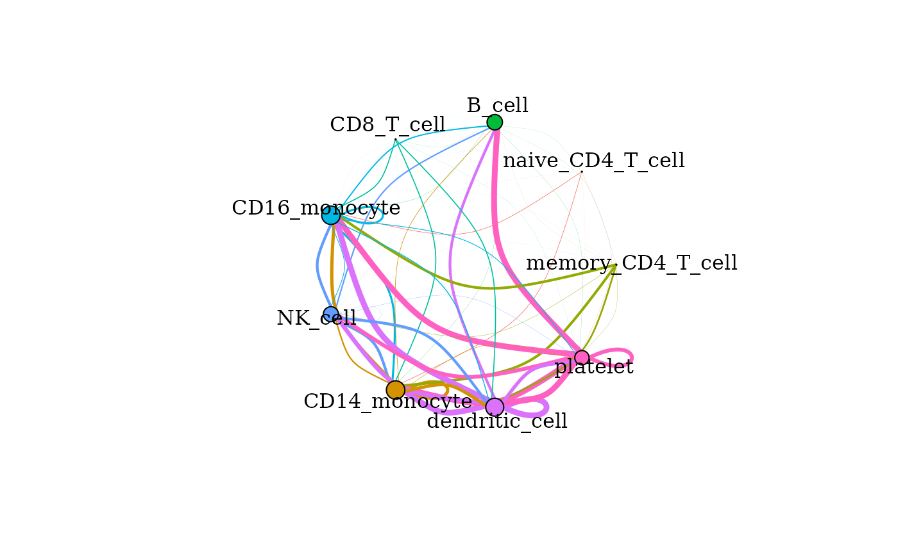
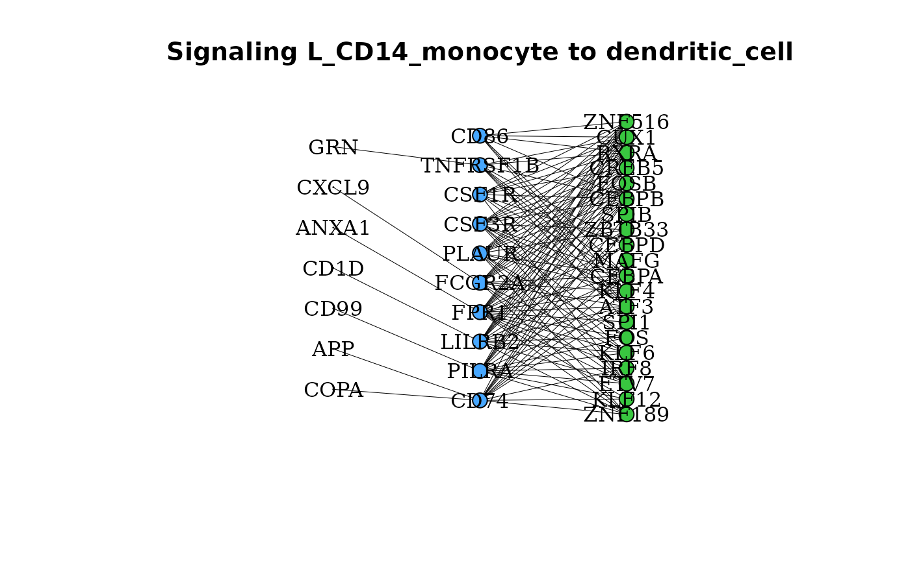
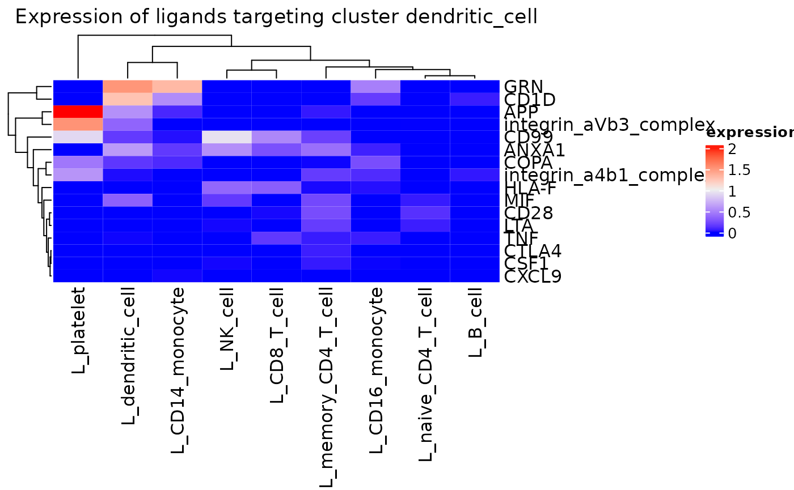
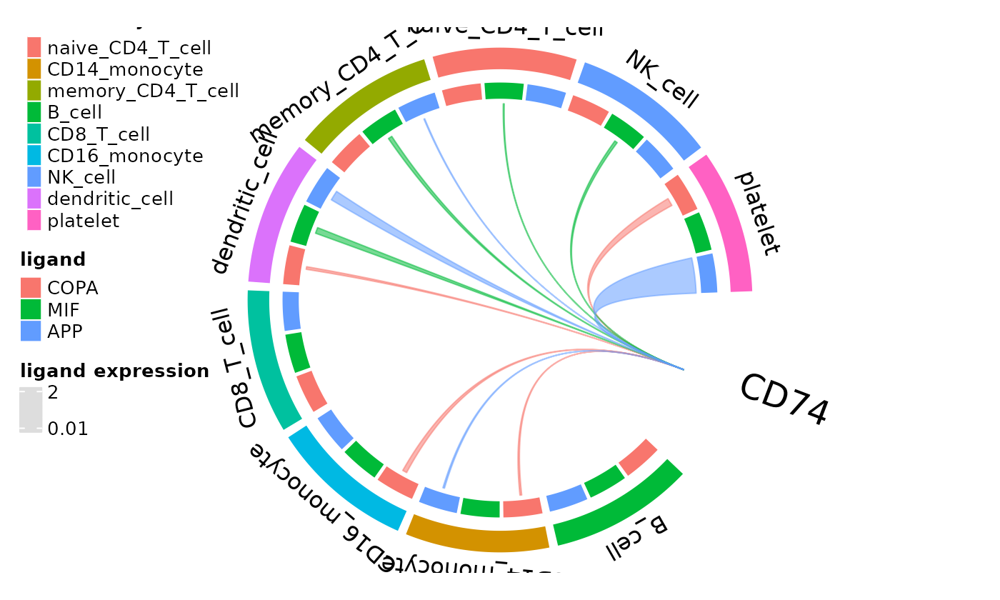

domino2 is a tool for analysis of intra- and intercellular signaling in single cell RNA sequencing (scRNAseq) data based on transcription factor (TF) activation. Here, we show a basic example pipeline for generating communication networks as a domino object. This vignette will demonstrate how to use domino2 on the 10X Genomics Peripheral Blood Mononuclear Cells (PBMC) data set of 2,700 cells. The data can be downloaded here.
Data preparation
Analysis of cell-cell communication with domino2 often follows initial processing and annotation of scRNAseq data. We used the Satija Lab’s Guided Clustering Tutorial to prepare the data set for analysis with domino2. The complete processing script is available in the data-raw directory of the domino2 package. The processed data can be downloaded from Zenodo.
pbmc <- readRDS(pbmc)Preparing Preprocessed Data:
domino2 was designed to be compatible with Seurat objects in addition to accepting matrices and vectors of the data set as function inputs. However, pySCENIC is used for TF activation inference, and it requires as input a cell by gene matrix. This is the opposite orientation of Seurat objects but is the default for Python based tools such as scanpy. The RNA counts matrix can be saved as a tab-seperated value (.tsv) or comma-sperated value (.csv) file after transposing the matrix to cell by gene orientation.
pbmc_counts <- Seurat::GetAssayData(object = pbmc, slot = "counts")
write.table(t(as.matrix(pbmc_counts)), paste0(input_dir, "/pbmc3k_counts.tsv"), sep = "\t",
col.names = NA)tsv and csv files are very inefficient for storing large matrices. As an alternative, the counts matrix can be saved as a loom file and directly passed to pySCENIC in this format. Generating a loom file in R requires use of the loomR package. The package automatically handles the transposition of the counts matrix to cell by gene orientation as well. We recommend this approach to passing a counts matrix to pySCENIC. However, users should be aware that loomR is not hosted on CRAN or BioConductor at the time of this vignette’s creation.
Installation
Installation of domino2 from Github can be achieved using the remotes package. The current stable version is v0.2.2, so we will install that version.
# if(!require(remotes)){ install.packages('remotes') }
# remotes::install_github('FertigLab/domino2@v0.2.2')Additional Downloads
For this tutorial, pySCENIC is used as the method for TF activity inference, and the assessment of ligand-receptor interactions is based on curated interactions from CellPhoneDB v4.0.0. Each of these requires downloading some files prior to use in our analysis pipeline.
Downloads for SCENIC:
A singularity image of SCENIC v0.12.1 can be installed from the DockerHub image as a source (example scripts for use with Docker are provided in the scenic_bash directory as well). SCENIC requires a list of TFs, motif annotations, and cisTarget motifs which are all available from the authors of SCENIC for human (HGNC), mouse (MGI), and fly. The following will download everything necessary for an analysis of a data set with HGNC gene labels for the hg38 genome.
SCENIC_DIR="'temp_dir'/scenic"
mkdir ${SCENIC_DIR}
# Build singularity image
singularity build "${SCENIC_DIR}/aertslab-pyscenic-0.12.1.sif" docker://aertslab/pyscenic:0.12.1
# Matrix containing motifs as rows and genes as columns and ranking position for each gene and motif (based on CRM scores) as values. URLs provided link to v2 feather files required for the 0.12.1 version of pySENIC.
curl "https://resources.aertslab.org/cistarget/databases/homo_sapiens/hg38/refseq_r80/mc_v10_clust/gene_based/hg38_10kbp_up_10kbp_down_full_tx_v10_clust.genes_vs_motifs.rankings.feather" \
-o "${SCENIC_DIR}/hg38_10kbp_up_10kbp_down_full_tx_v10_clust.genes_vs_motifs.rankings.feather"
curl "https://resources.aertslab.org/cistarget/databases/homo_sapiens/hg38/refseq_r80/mc_v10_clust/gene_based/hg38_500bp_up_100bp_down_full_tx_v10_clust.genes_vs_motifs.rankings.feather" \
-o "${SCENIC_DIR}/hg38_500bp_up_100bp_down_full_tx_v10_clust.genes_vs_motifs.rankings.feather"
# List of genes encoding TFs in the HG38 reference genome
curl "https://resources.aertslab.org/cistarget/tf_lists/allTFs_hg38.txt" \
-o "${SCENIC_DIR}/allTFs_hg38.txt"
# Motif annotations based on the 2017 cisTarget motif collection. Use these files if you are using the mc9nr databases.
curl "https://resources.aertslab.org/cistarget/motif2tf/motifs-v9-nr.hgnc-m0.001-o0.0.tbl" \
-o "${SCENIC_DIR}/motifs-v9-nr.hgnc-m0.001-o0.0.tbl"Downloads for CellPhoneDB:
Database files from CellPhoneDB v4.0.0 for human scRNAseq data can be installed from a public Github repository from the Tiechmann Group that developed CellPhoneDB.
SCENIC Analysis
SCENIC is our lab’s preferred software for TF activity scoring. We recommend using the Python implementation (pySCENIC) as it is faster than the original R implementation. Be aware, the use of SCENIC is often the slowest and most memory intensive step of this analysis pipeline. SCENIC should be run on computing resources with access to multi-core processing and large amounts of memory.
As described in the section on saving preprocessed data, SCENIC requires RNA counts to be provided in a cell by gene matrix format, so we will be using the pbmc3k_counts.loom file in this stage of analysis.
pySCENIC is initiated using bash scripting in the terminal. The analysis consists of 3 steps to score genes for TF motif enrichment, construct TF regulons consisting of genes targeted by the TFs, and arrive at AUC scores for enrichment of regulon gene transcription within each cell.
grn: construct TF-modules
Co-expression modules are used to quantify gene-TF adjacencies.
singularity exec "${SCENIC_DIR}/aertslab-pyscenic-0.12.1.sif" pyscenic grn \
"pbmc3k_counts.loom" \
"${SCENIC_DIR}/allTFs_hg38.txt" \
-o "${SCENIC_DIR}/pbmc_adj_3k.tsv" \
--num_workers 6 \
--seed 123
# Arguments:
# path to the loom file
# list of TFs
# output directory for the adjacency matrix
# number of CPUs to use if multi-core processing is available
# specify a random seed for reproducibilityctx: construct TF regulons with pruning based on TF motif enrichment
The rankings of genes based on enrichment of TF motifs to the transcription start site (TSS) are considered in the construction of regulons, where target genes in the TF-modules are removed if they lack motifs proximal to the TSS where the TF may bind.
singularity exec "${SCENIC_DIR}/aertslab-pyscenic-0.12.1.sif" pyscenic ctx \
"${SCENIC_DIR}/pbmc_adj.tsv" \
"${SCENIC_DIR}/hg38_10kbp_up_10kbp_down_full_tx_v10_clust.genes_vs_motifs.rankings.feather" \
"${SCENIC_DIR}/hg38_500bp_up_100bp_down_full_tx_v10_clust.genes_vs_motifs.rankings.feather" \
--annotations_fname "${SCENIC_DIR}/motifs-v9-nr.hgnc-m0.001-o0.0.tbl" \
--expression_mtx_fname "pbmc3k_counts.loom" \
--mode "dask_multiprocessing" \
--output "${SCENIC_DIR}/regulons_pbmc_3k.csv" \
--num_workers 1
# Arguments:
# adjacency matrix output from grn
# target rankings of motif enrichment within 10 kb of TSS
# target rankings of motif enrichment within 500 bp upstream and 100 bp downstream of TSS
# TF motif features
# counts matrix loom file
# enable multi-core processing
# output file of learned TF regulons
# number of CPU coresaucell: calculate TF activity scores
Enrichment of a regulon is measured as the Area Under the recovery Curve (AUC) of the genes that define this regulon.
singularity exec "${SCENIC_DIR}/aertslab-pyscenic-0.12.1.sif" pyscenic aucell \
"pbmc3k_counts.loom" \
"${SCENIC_DIR}/regulons_pbmc_3k.csv" \
-o "${SCENIC_DIR}/auc_pbmc_3k.csv"
# Arguments:
# counts matrix loom file
# regulon table output from ctx
# cell x TF matrix of TF enrichment AUC valuesBuilding a Signaling Network with domino2
Loading SCENIC Results
The TF activities are a required input for domino2, and the regulons learned by SCENIC are an important but optional input needed to annotate TF-target interactions and to prune TF-receptor linkages where the receptor is a target of the TF. This prevents the distinction of receptor expression driving TF activity or the TF inducing the receptor’s expression.
regulons <- read.csv(scenic_regulon)
auc <- read.table(scenic_auc, header = TRUE, row.names = 1, stringsAsFactors = FALSE,
sep = ",")The initial regulons data frame read into R from the ctx function has
2 rows of column names that need to be replaced with one succinct
description. domino2 has changed the input format for TF regulons to be
a list storing vectors of target genes in each regulon, where the names
of the list are the TF genes. This facilitates the use of alternative
methods for TF activity quantification. We provide a helper function,
create_regulon_list_scenic() for easy retrieval of TF
regulons from the output of the pySCENIC ctx
function.
regulons <- regulons[-1:-2, ]
colnames(regulons) <- c("TF", "MotifID", "AUC", "NES", "MotifSimilarityQvalue", "OrthologousIdentity",
"Annotation", "Context", "TargetGenes", "RankAtMax")
regulon_list <- create_regulon_list_scenic(regulons = regulons)Users should be aware that the AUC matrix from SCENIC is loaded in a cell x TF
orientation and should be transposed to TF x cell orientation. pySCENIC
also appends “(+)” to TF names that are converted to “…” upon loading
into R. These characters can be included without affecting the results
of domino2 analysis, but can be confusing when querying TF features in
the data. We recommend comprehensive removal of the “…” characters using
the gsub() function.
auc_in <- as.data.frame(t(auc))
# Remove pattern '...' from the end of all rownames:
rownames(auc_in) <- gsub("\\.\\.\\.$", "", rownames(auc_in))Load CellPhoneDB Database
domino2 has been updated to read ligand-receptor data bases in a uniform data.frame format referred to as a receptor-ligand map (rl_map) to enable the use of alternative or updated reference databases as opposed to a particular version of CellPhoneDB’s database in older versions of Domino. Each row corresponds to a ligand-receptor interaction. Genes participating in an interaction are referred to as “partner A” and “partner B” without a requirement for fixed ordering of whether A or B is the ligand and vice versa. The minimum required columns of this data frame are:
- int_pair: the names of the interacting ligand and receptor separated by ” & ”
- gene_A: the gene or genes encoding partner A
- gene_B: the gene or genes encoding partner B
- type_A: (“L”, “R”) - indicates whether partner A is a ligand (“L”) or receptor (“R”)
- type_B: (“L”, “R”) - indicates whether partner B is a ligand (“L”) or receptor (“R”)
Additional annotation columns can be provided such as name_A and name_B for ligands or receptors whose name in the interaction database does not match the names of their encoding genes. This formatting also allows for the consideration of ligand and receptor complexes comprised of a heteromeric combination of multiple proteins that must be co-expressed to function. In these cases, the “name_*” column shows the name of the protein complex, and the “gene_*” column shows the names of the genes encoding the components of the complex separated by commas “,”. When plotting results from the build domino object, the names of the interacting ligands and receptors will be used based on combinatorial expression of the complex components.
To facilitate the use of this formatting with the CellPhoneDB
database, we include a helper function,
create_rl_map_cellphonedb(), that automatically parses
files from the cellPhoneDB database to arrive at the rl_map format.
complexes <- read.csv(paste0(cellphone_dir, "/cellphonedb-data-4.0.0/data/complex_input.csv"),
stringsAsFactors = FALSE)
genes <- read.csv(paste0(cellphone_dir, "/cellphonedb-data-4.0.0/data/gene_input.csv"),
stringsAsFactors = FALSE)
interactions <- read.csv(paste0(cellphone_dir, "/cellphonedb-data-4.0.0/data/interaction_input.csv"),
stringsAsFactors = FALSE)
proteins <- read.csv(paste0(cellphone_dir, "/cellphonedb-data-4.0.0/data/protein_input.csv"),
stringsAsFactors = FALSE)
rl_map <- create_rl_map_cellphonedb(genes = genes, proteins = proteins, interactions = interactions,
complexes = complexes, database_name = "CellPhoneDB_v4.0" # database version used
)
knitr::kable(head(rl_map))| int_pair | name_A | uniprot_A | gene_A | type_A | name_B | uniprot_B | gene_B | type_B | annotation_strategy | source | database_name | |
|---|---|---|---|---|---|---|---|---|---|---|---|---|
| 4 | RAreceptor_RXRG & atRetinoicAcid_byALDH1A3 | RAreceptor_RXRG | P48443,P29373 | RXRG,CRABP2 | R | atRetinoicAcid_byALDH1A3 | P47895 | ALDH1A3 | L | curated | uniprot;reactome | CellPhoneDB_v4.0 |
| 5 | RAreceptor_RXRG & atRetinoicAcid_byALDH1A2 | RAreceptor_RXRG | P48443,P29373 | RXRG,CRABP2 | R | atRetinoicAcid_byALDH1A2 | O94788 | ALDH1A2 | L | curated | uniprot;reactome | CellPhoneDB_v4.0 |
| 6 | RAreceptor_RXRG & atRetinoicAcid_byALDH1A1 | RAreceptor_RXRG | P48443,P29373 | RXRG,CRABP2 | R | atRetinoicAcid_byALDH1A1 | P00352 | ALDH1A1 | L | curated | uniprot;reactome | CellPhoneDB_v4.0 |
| 7 | RAreceptor_RXRB & atRetinoicAcid_byALDH1A3 | RAreceptor_RXRB | P28702,P29373 | RXRB,CRABP2 | R | atRetinoicAcid_byALDH1A3 | P47895 | ALDH1A3 | L | curated | uniprot;reactome | CellPhoneDB_v4.0 |
| 8 | RAreceptor_RXRB & atRetinoicAcid_byALDH1A2 | RAreceptor_RXRB | P28702,P29373 | RXRB,CRABP2 | R | atRetinoicAcid_byALDH1A2 | O94788 | ALDH1A2 | L | curated | uniprot;reactome | CellPhoneDB_v4.0 |
| 9 | RAreceptor_RXRB & atRetinoicAcid_byALDH1A1 | RAreceptor_RXRB | P28702,P29373 | RXRB,CRABP2 | R | atRetinoicAcid_byALDH1A1 | P00352 | ALDH1A1 | L | curated | uniprot;reactome | CellPhoneDB_v4.0 |
Optional: Adding interactions manually
The change to use rl_map formatting also enables users to manually
append interactions of interest that are not included in the interaction
database if need be. This can be attained by formatting the desired
interactions as a data.frame with the same column headers as the rl_map
and using the rbind() function.
# Integrin complexes are not annotated as receptors in CellPhoneDB_v4.0
# collagen-integrin interactions between cells may be missed unless tables from
# the CellPhoneDB reference are edited or the interactions are manually added
col_int_df <- data.frame(int_pair = "a11b1 complex & COLA1_HUMAN", name_A = "a11b1 complex",
uniprot_A = "P05556,Q9UKX5", gene_A = "ITB1,ITA11", type_A = "R", name_B = "COLA1_HUMAN",
uniprot_B = "P02452,P08123", gene_B = "COL1A1,COL1A2", type_B = "L", annotation_strategy = "manual",
source = "manual", database_name = "manual")
rl_map_append <- rbind(col_int_df, rl_map)
knitr::kable(head(rl_map_append))| int_pair | name_A | uniprot_A | gene_A | type_A | name_B | uniprot_B | gene_B | type_B | annotation_strategy | source | database_name | |
|---|---|---|---|---|---|---|---|---|---|---|---|---|
| 1 | a11b1 complex & COLA1_HUMAN | a11b1 complex | P05556,Q9UKX5 | ITB1,ITA11 | R | COLA1_HUMAN | P02452,P08123 | COL1A1,COL1A2 | L | manual | manual | manual |
| 4 | RAreceptor_RXRG & atRetinoicAcid_byALDH1A3 | RAreceptor_RXRG | P48443,P29373 | RXRG,CRABP2 | R | atRetinoicAcid_byALDH1A3 | P47895 | ALDH1A3 | L | curated | uniprot;reactome | CellPhoneDB_v4.0 |
| 5 | RAreceptor_RXRG & atRetinoicAcid_byALDH1A2 | RAreceptor_RXRG | P48443,P29373 | RXRG,CRABP2 | R | atRetinoicAcid_byALDH1A2 | O94788 | ALDH1A2 | L | curated | uniprot;reactome | CellPhoneDB_v4.0 |
| 6 | RAreceptor_RXRG & atRetinoicAcid_byALDH1A1 | RAreceptor_RXRG | P48443,P29373 | RXRG,CRABP2 | R | atRetinoicAcid_byALDH1A1 | P00352 | ALDH1A1 | L | curated | uniprot;reactome | CellPhoneDB_v4.0 |
| 7 | RAreceptor_RXRB & atRetinoicAcid_byALDH1A3 | RAreceptor_RXRB | P28702,P29373 | RXRB,CRABP2 | R | atRetinoicAcid_byALDH1A3 | P47895 | ALDH1A3 | L | curated | uniprot;reactome | CellPhoneDB_v4.0 |
| 8 | RAreceptor_RXRB & atRetinoicAcid_byALDH1A2 | RAreceptor_RXRB | P28702,P29373 | RXRB,CRABP2 | R | atRetinoicAcid_byALDH1A2 | O94788 | ALDH1A2 | L | curated | uniprot;reactome | CellPhoneDB_v4.0 |
Creating the Domino Object
domino2 analysis takes place in two steps.
-
initializes the domino result object
assesses differential TF activity across cell clusters by wilcoxon rank-sum test
establishes TF-receptor linkages based on Spearman correlation of TF activities with receptor expression across the queried data set.
-
sets the parameters for which TFs and receptors are called as active within a cell cluster
aggregates the scaled expression of ligands capable of interacting with the active receptors for assessment of ligand type and cellular source triggering activation of a receptor.
Required inputs from data set
domino2 infers active receipt of signals via receptors based on the
correlation of the receptor’s expression with TF activity across the
data set and differential activity of the TF within a cell cluster.
Correlations are conducted using scaled expression values rather than
raw counts or normalized counts. For assessment of receptor activity on
a per cell type basis, a named vector of cell cluster assignments, where
the names are cell barcodes matching the expression matrix, are
provided. Assessing signaling based on other categorical groupings of
cells can be achieved by passing these groupings as “clusters” to
build_domino() in place of cell types. domino2 accepts
either a Seurat object with counts, scaled counts, and
clusters included, or it requires a matrix of counts, a matrix of scaled
counts, and a named vector of cell cluster labels as factors. Shown
below is how to extract these elements from a Seurat
object.
counts <- Seurat::GetAssayData(object = pbmc, slot = "counts")
z_scores <- as.matrix(Seurat::GetAssayData(object = pbmc, slot = "scale.data"))
clusters <- pbmc$cell_typeNote: Ligand and receptor expression can only be assessed for genes included in the z_scores matrix. Many scRNAseq analysis pipelines recommend storing only genes with high variance in scaled expression slots for these data objects, thereby missing many genes encoding ligands and receptors. Ensure that all your genes of interest are included in the rows of your z_scores matrix. Scaled expression was calculated for all genes in this PBMC data set after removal of genes expressed in less than 3 cells.
Create Domino object
At this point, the create_domino() function can be used
to make the object. Parameters of note include “use_clusters” which is
required to assess signaling between cell types rather than linkage of
TFs and receptors broadly across the data set. “use_complexes” decides
if receptors that function in heteromeric complexes will be considered
in testing linkages between TFs and receptors. If TRUE, a receptor
complex is only linked to a TF if a majority of the component genes meet
the Spearman correlation threshold. “remove_rec_dropout” decides whether
receptor values of 0 will be considered in correlation calculations;
this measure is intended to reduce the effect of dropout on receptors
with low expression.
To run create_domino() with matrix and vector
inputs:
pbmc_dom <- create_domino(rl_map = rl_map, features = auc_in, counts = counts, z_scores = z_scores,
clusters = clusters, tf_targets = regulon_list, use_clusters = TRUE, use_complexes = TRUE,
remove_rec_dropout = FALSE)
# rl_map: receptor-ligand map data frame features: TF scores (AUC matrix)
# counts: counts matrix z_scores: scaled expression data clusters: named vector
# of cell cluster assignments tf_targets: list of TFs and their regulons
# use_clusters: assess receptor activation and ligand expression on a
# per-cluster basis use_complexes: include receptors and genes that function as
# a complex in results remove_rec_dropout: whether to remove zeroes from
# correlation calculationsThe above results will be equivalent to using the Seurat object directly. Note that inclusion of both the matrix inputs and the Seurat object will prioritize the Seurat object.
pbmc_dom <- create_domino(rl_map = rl_map, features = auc_in, ser = pbmc, tf_targets = regulon_list,
use_clusters = TRUE, use_complexes = TRUE, remove_rec_dropout = FALSE)For information on what is stored in a domino object and how to access it, please see our vignette on the structure of domino objects.
Build Domino
build_domino() finalizes the construction of the domino
object by setting parameters for identifying TFs with differential
activation between clusters, receptor linkage with TFs based on
magnitude of positive correlation, and the minimum percentage of cells
within a cluster that have expression of a receptor for the receptor to
be called as active.
There are also options for thresholds of the number of TFs that may be called active in a cluster and the number of receptors that may be linked to any one TF. For thresholds of n TFs and m receptors, the bottom n TFs by lowest p-values from the wilcoxon rank sum test and the top m receptors by Spearman correlation coefficient are chosen.
pbmc_dom <- build_domino(dom = pbmc_dom, min_tf_pval = 0.001, max_tf_per_clust = 25,
max_rec_per_tf = 25, rec_tf_cor_threshold = 0.25, min_rec_percentage = 0.1)
# min_tf_pval: Threshold for p-value of DE for TFs rec_tf_cor_threshold:
# Minimum correlation between receptor and TF min_rec_percentage: Minimum
# percent of cells that must express receptorBoth of the thresholds for the number of receptors and TFs can be sent to infinity (Inf) to collect all receptors and TFs that meet statistical significance thresholds.
pbmc_dom_all <- build_domino(dom = pbmc_dom, min_tf_pval = 0.001, max_tf_per_clust = Inf,
max_rec_per_tf = Inf, rec_tf_cor_threshold = 0.25, min_rec_percentage = 0.1)Visualization of Domino Results
Multiple functions are available to visualize the intracellular networks between receptors and TFs and the ligand-receptor mediated intercellular networks between cell types.
Summarize TF Activity and Linkage
Enrichment of TF activities by cell types can be visualized by
feat_heatmap() which plots data set-wide TF activity scores
as a heatmap.
feat_heatmap(pbmc_dom, norm = TRUE, bool = FALSE, use_raster = FALSE, row_names_gp = grid::gpar(fontsize = 4))
Cumulative signaling between cell types
The cumulative degree of signaling between clusters is assessed as
the sum of the scaled expression of ligands targeting active receptors
on another cluster. This can be visualized in graph format using the
signaling_network() function. Nodes represent each cell
cluster and edges scale with the magnitude of signaling between the
clusters. The color of the edge corresponds to the sender cluster for
that signal.
signaling_network(pbmc_dom, edge_weight = 0.5, max_thresh = 3)
Signaling networks can also be drawn with the edges only rendering the signals directed towards a given cell type or signals from one cell type directed to others. To see those options in use, as well as other plotting functions and their options, please see our plotting vignette.
Specific Signaling Interactions between Clusters
Beyond the aggregated degree of signaling between cell types, the
degrees of signaling through specific ligand-receptor interactions can
be assessed. gene_network() provides a graph of linkages
between active TFs in a cluster, the linked receptors in that cluster,
and the possible ligands of these active receptors.
gene_network(pbmc_dom, clust = "dendritic_cell", layout = "grid")
New to domino2, gene_network() can be used between two
clusters to determine if any of the possible ligands for a given
receptor are expressed by a putative outgoing signaling cluster.
gene_network(pbmc_dom, clust = "dendritic_cell", OutgoingSignalingClust = "CD14_monocyte",
layout = "grid")
A comprehensive assessment of ligand expression targeting active
receptors on a given cluster can be assessed with
incoming_signaling_heatmap().
incoming_signaling_heatmap(pbmc_dom, rec_clust = "dendritic_cell", max_thresh = 2.5,
use_raster = FALSE)
Another form of comprehensive ligand expression assessment is available for individual active receptors in the form of circos plots new to domino2. The outer arcs correspond to clusters in the domino object with inner arcs representing each possible ligand of the plotted receptor. Arcs are drawn between ligands on a cell type and the receptor if the ligand is expressed above the specified threshold. Arc widths correspond to the mean express of the ligand by the cluster with the widest arc width scaling to the maximum expression of the ligand within the data.
circos_ligand_receptor(pbmc_dom, receptor = "CD74")
Continued Development
Since domino2 is a package still being developed, there are new functions and features that will be implemented in future versions. In the meantime, we have put together further information on plotting and the domino object structure if you would like to explore more of the package’s functionality. Additionally, if you find any bugs, have further questions, or want to share an idea, please let us know here.
Vignette Build Information
Date last built and session information:
Sys.Date()
#> [1] "2024-02-02"
sessionInfo()
#> R version 4.3.2 (2023-10-31)
#> Platform: x86_64-pc-linux-gnu (64-bit)
#> Running under: Ubuntu 22.04.3 LTS
#>
#> Matrix products: default
#> BLAS: /usr/lib/x86_64-linux-gnu/openblas-pthread/libblas.so.3
#> LAPACK: /usr/lib/x86_64-linux-gnu/openblas-pthread/libopenblasp-r0.3.20.so; LAPACK version 3.10.0
#>
#> locale:
#> [1] LC_CTYPE=C.UTF-8 LC_NUMERIC=C LC_TIME=C.UTF-8
#> [4] LC_COLLATE=C.UTF-8 LC_MONETARY=C.UTF-8 LC_MESSAGES=C.UTF-8
#> [7] LC_PAPER=C.UTF-8 LC_NAME=C LC_ADDRESS=C
#> [10] LC_TELEPHONE=C LC_MEASUREMENT=C.UTF-8 LC_IDENTIFICATION=C
#>
#> time zone: UTC
#> tzcode source: system (glibc)
#>
#> attached base packages:
#> [1] grid stats graphics grDevices utils datasets methods
#> [8] base
#>
#> other attached packages:
#> [1] knitr_1.45 ComplexHeatmap_2.18.0 circlize_0.4.15
#> [4] plyr_1.8.9 Seurat_5.0.1 SeuratObject_5.0.1
#> [7] sp_2.1-3 domino2_0.99.1
#>
#> loaded via a namespace (and not attached):
#> [1] RcppAnnoy_0.0.22 splines_4.3.2 later_1.3.2
#> [4] bitops_1.0-7 filelock_1.0.3 tibble_3.2.1
#> [7] polyclip_1.10-6 XML_3.99-0.16.1 fastDummies_1.7.3
#> [10] lifecycle_1.0.4 rstatix_0.7.2 doParallel_1.0.17
#> [13] globals_0.16.2 lattice_0.21-9 MASS_7.3-60
#> [16] backports_1.4.1 magrittr_2.0.3 plotly_4.10.4
#> [19] sass_0.4.8 rmarkdown_2.25 jquerylib_0.1.4
#> [22] yaml_2.3.8 httpuv_1.6.14 sctransform_0.4.1
#> [25] spam_2.10-0 spatstat.sparse_3.0-3 reticulate_1.35.0
#> [28] cowplot_1.1.3 pbapply_1.7-2 DBI_1.2.1
#> [31] RColorBrewer_1.1-3 abind_1.4-5 zlibbioc_1.48.0
#> [34] Rtsne_0.17 purrr_1.0.2 BiocGenerics_0.48.1
#> [37] RCurl_1.98-1.14 rappdirs_0.3.3 GenomeInfoDbData_1.2.11
#> [40] IRanges_2.36.0 S4Vectors_0.40.2 ggrepel_0.9.5
#> [43] irlba_2.3.5.1 spatstat.utils_3.0-4 listenv_0.9.1
#> [46] goftest_1.2-3 RSpectra_0.16-1 spatstat.random_3.2-2
#> [49] fitdistrplus_1.1-11 parallelly_1.36.0 pkgdown_2.0.7
#> [52] leiden_0.4.3.1 codetools_0.2-19 xml2_1.3.6
#> [55] tidyselect_1.2.0 shape_1.4.6 spatstat.explore_3.2-5
#> [58] matrixStats_1.2.0 stats4_4.3.2 BiocFileCache_2.10.1
#> [61] jsonlite_1.8.8 GetoptLong_1.0.5 ellipsis_0.3.2
#> [64] progressr_0.14.0 ggridges_0.5.6 survival_3.5-7
#> [67] iterators_1.0.14 systemfonts_1.0.5 foreach_1.5.2
#> [70] tools_4.3.2 progress_1.2.3 ragg_1.2.7
#> [73] ica_1.0-3 Rcpp_1.0.12 glue_1.7.0
#> [76] gridExtra_2.3 xfun_0.41 GenomeInfoDb_1.38.5
#> [79] dplyr_1.1.4 withr_3.0.0 formatR_1.14
#> [82] fastmap_1.1.1 fansi_1.0.6 digest_0.6.34
#> [85] R6_2.5.1 mime_0.12 textshaping_0.3.7
#> [88] colorspace_2.1-0 scattermore_1.2 tensor_1.5
#> [91] spatstat.data_3.0-4 biomaRt_2.58.2 RSQLite_2.3.5
#> [94] utf8_1.2.4 tidyr_1.3.1 generics_0.1.3
#> [97] data.table_1.15.0 prettyunits_1.2.0 httr_1.4.7
#> [100] htmlwidgets_1.6.4 uwot_0.1.16 pkgconfig_2.0.3
#> [103] gtable_0.3.4 blob_1.2.4 lmtest_0.9-40
#> [106] XVector_0.42.0 htmltools_0.5.7 carData_3.0-5
#> [109] dotCall64_1.1-1 clue_0.3-65 scales_1.3.0
#> [112] Biobase_2.62.0 png_0.1-8 reshape2_1.4.4
#> [115] rjson_0.2.21 nlme_3.1-163 curl_5.2.0
#> [118] cachem_1.0.8 zoo_1.8-12 GlobalOptions_0.1.2
#> [121] stringr_1.5.1 KernSmooth_2.23-22 parallel_4.3.2
#> [124] miniUI_0.1.1.1 AnnotationDbi_1.64.1 desc_1.4.3
#> [127] pillar_1.9.0 vctrs_0.6.5 RANN_2.6.1
#> [130] promises_1.2.1 ggpubr_0.6.0 car_3.1-2
#> [133] dbplyr_2.4.0 xtable_1.8-4 cluster_2.1.4
#> [136] evaluate_0.23 cli_3.6.2 compiler_4.3.2
#> [139] rlang_1.1.3 crayon_1.5.2 future.apply_1.11.1
#> [142] ggsignif_0.6.4 fs_1.6.3 stringi_1.8.3
#> [145] deldir_2.0-2 viridisLite_0.4.2 munsell_0.5.0
#> [148] Biostrings_2.70.2 lazyeval_0.2.2 spatstat.geom_3.2-8
#> [151] Matrix_1.6-5 RcppHNSW_0.5.0 hms_1.1.3
#> [154] patchwork_1.2.0 bit64_4.0.5 future_1.33.1
#> [157] ggplot2_3.4.4 KEGGREST_1.42.0 shiny_1.8.0
#> [160] highr_0.10 ROCR_1.0-11 igraph_2.0.1.1
#> [163] broom_1.0.5 memoise_2.0.1 bslib_0.6.1
#> [166] bit_4.0.5